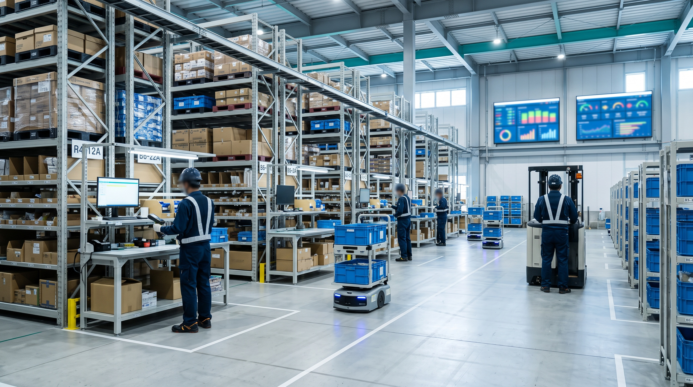

FDE / INTERVIEW
「見えない業務」を拾えたとき、
現場が変わる。
倉庫の現場責任者からFDEへ。仕様書に載らない判断こそ、DXの鍵だと知りました。
- 所属
- FDE
- 入社
- 2021年 中途入社
- 前職
- 物流現場運営
- 担当領域
- 物流現場・業務整理・技術要件整理・設計・実装・運用
CAREER STEP
- 〜2020物流センターの運営
作業進捗・人員配置・改善活動を担当
- 2021PAL入社／FDE
現場に入り、課題を技術要件へ翻訳する役割へ
- 現在物流DXの設計・実装・運用
現場とシステム部をつなぎ、使われる仕組みまで担当
REASON
入社を決めた理由。
PALに入社する前は、どんな仕事をしていましたか？
前職では物流センターの運営に携わり、日々の作業進捗や人員配置、改善活動などを担当していました。
現場では、数字だけでは分からない細かな工夫や、逆に仕組みになっていない仕事がたくさんあります。
その経験が、今のFDEとして現場を見るときにも活きています。
PALへ入社したきっかけを教えてください。
現場改善を続ける中で、人の工夫だけでは解決できない課題が増えていると感じたことがきっかけです。
システムやデータを使えば変えられることがある一方で、現場を理解せずに仕組みだけを入れてもうまくいきません。
両方に関われる仕事がしたいと思い、PALに興味を持ちました。
WORK
いま担当している仕事。
現在はどんな仕事を担当していますか？
物流現場へ入り、実際の作業や業務の流れを確認しながら、どこに課題があるのかを整理しています。
そのうえで、システム部や現場メンバーと相談しながら、課題を技術要件に変え、設計・実装・運用までつなげています。
FDEとして、どのような流れで仕事を進めていますか？
最初から「このシステムを入れましょう」と考えることはありません。
まず現場を見て、人がどんな判断をしているか、どこで止まっているか、何がデータとして残っていないかを確認します。
そこから課題を整理し、必要な仕組みを考えていきます。

顧客の業務課題を技術要件へ翻訳し、設計・実装・運用までをつなぐ。
- 現場を理解する
- 課題を整理する
- 技術要件へ翻訳する
- 設計する
- 実装する
- 運用する
- 改善する
現場で使われて初めて、仕組みになる。
※ この言葉の背景は取材時にお伺いします。
CHALLENGE
難しいと感じるところ。

仕事で難しいと感じるのはどんなところですか？
現場ごとに運用が違うことです。
同じ物流業務でも、人、設備、商品、ルールが違えば、必要な仕組みも変わります。
正解を持ち込むのではなく、その現場に合う形を一緒につくることが大切だと思っています。
REWARD
この仕事のやりがい。
システムが完成した瞬間より、現場で実際に使われた瞬間の方が、手応えを感じます。
仕事の中で一番面白いと感じる瞬間は？
最初は見えていなかった業務が整理され、現場の方から「これなら使える」と言ってもらえたときです。
システムが完成した瞬間より、実際の仕事の中に入った瞬間の方が手応えを感じます。
印象に残っている仕事を教えてください。
※ 具体的な案件は、社外公開の可否を確認のうえ取材時にお伺いします。
ABOUT PAL
PALをどんな会社だと感じるか。
※ 部署間・現場・経営との距離感は取材時にお伺いします。
FUTURE
これから挑戦したいこと。
今後やってみたいことを教えてください。
一つの現場で得た知見を、別の現場でも活かせる仕組みにしていきたいです。
個別改善だけではなく、物流DXを継続的に進められる形へつなげたいと考えています。
PALへの応募を検討している方へ、メッセージをお願いします。
物流経験がある人も、技術経験がある人も、どちらか一方だけでは完結しない仕事です。
分からないことを現場で確かめながら、一緒に仕組みをつくることを楽しめる方と働きたいです。
1 DAY SCHEDULE
ある一日の流れ。
- 出社・現場前チェック
その日訪問する物流現場の稼働状況とデータをダッシュボードで確認。
- 現場ヒアリング／観察
倉庫に入り、帳票外の運用や例外処理を観察・記録。
- 設計ミーティング
観察内容をもとに、代替運用フローや可視化要件をチームで議論。
- プロトタイプ調整
画面や帳票を現場に合わせて調整し、システム部と連携。
- 現場フィードバック
現場責任者と改善案をすり合わせ、翌日の進め方を決める。
- 記録・振り返り
気づきをナレッジ化。属人化していた判断を手順として言語化する。
※ 一日の流れは一例です。担当プロジェクト・拠点・時期によって異なります。